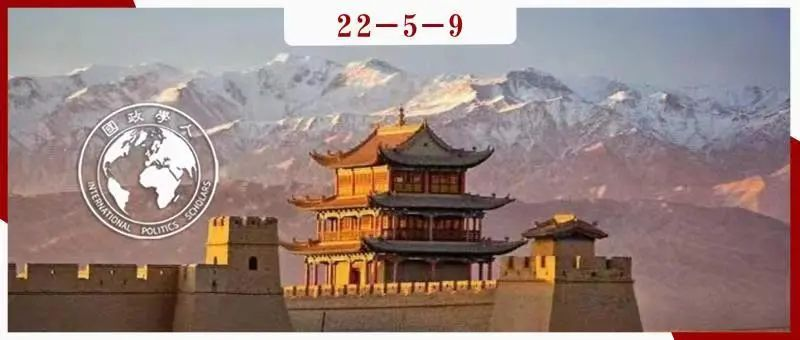

收录于合集

地缘文化力量：中国的一带一路倡议
作者： Tim Winter，西澳大利亚大学社会科学系教授。
编译： 秦子宁（国政学人编译员，武汉大学国际政治学硕士生）
来源： Tim Winter (2020): Geocultural Power: China’s Belt and Road Initiative, Geopolitics. DOI:10.1080/14650045.2020.1718656

导读
自从中国提出“一带一路”倡议以来，“一带一路”倡议得到了国际上的广泛关注。在对“一带一路”的分析中，“丝绸之路”总是被人们不经意间描述地与互联互通和贸易相关：骆驼商队穿越沙漠，阿拉伯商船穿越海洋，这段历史跨越了遥远的距离和漫长的时间。文章将丝绸之路概念化为一个地缘文化构想，这种构想是对前现代全球化的一种浪漫而宏大的叙事，描述的是交流、贸易和跨文化接触。这个词在20世纪流行，并逐渐与和平、国际和谐和对话的话语来联系在一起。文章认为， 中国通过调动这些特质和联系来实现本国的战略目标，“丝绸之路”地缘文化的这些特质延伸扩大的另一个地缘文化形式——中华文明的重要性。这些与丝绸之路相联系的价值观和观念为中国提供了一个独特的平台，使得作为文明国家的中国能够行使地缘文化优势。
摘要
文章将中国的“一带一路”倡议视为地缘文化力量的一次演练。迄今为止，“一带一路”被分析为一项地缘政治和地缘经济倡议，围绕基础设施、贸易或金融协议的发展展开争论。本文介绍了丝绸之路作为现代最引人注目的地缘文化概念之一，以展示其作为合作平台和多部门互联互通的战略价值。对丝绸之路的批判性分析为“一带一路”提供了新的见解，揭示了中国如何调动其作为一个文明国家的地缘文化潜力，以建立区域和大陆的连接。
编译
01
作为地缘文化的丝绸之路
文章重视文化和历史在国际政治中的作用，尽管软实力理论、后殖民理论对于国际事务的文化作用进行了一系列讨论，但是作者认为一旦超出国家的范畴，概念的一致性就存在模糊之处。虽然民族国家已经成为现代最根深蒂固的地缘文化想象，但大博弈、亚洲、冷战和丝绸之路这些概念都属于那些赋予更大、更不固定实体形式的地缘文化类别。诸多地缘文化概念在近现代都深刻影响了国家关系，作者提出从地缘文化的角度去看待丝绸之路，以及它作为当今国际合作平台的重要意义。
丝绸之路是近些年来最引人著名的地缘文化概念，以互联互通和传播为重心。然而对于丝绸之路作为理解前现代欧亚大陆的分析工具是否有效，依然存在争议。丝绸之路通过对商队穿越沙漠和山脉的想象，展望了新自由主义对贸易和技术交流的叙述，并进行了对一些观念的浪漫化描述，包括思想流动、人口迁移和地区大国兴衰等。
文章将丝绸之路视为一个框架，以便于更好的理解思想、技术、宗教、语言和大量文化产品在人口和地区之间流动的方式。同时，丝绸之路又将跨越千年和广阔地域的复杂历史简化为一个单一的、包罗万象的主题，过于轻易地忽略了不便之处：冲突、饥荒、瘟疫、帝国征服、宗教战争和海盗劫掠。
在公众的想象中，丝绸之路是关于欧亚历史神秘而迷人的记述。关键的是，从20世纪50年代以来，丝绸之路的诸多主题成为了国际合作和外交架构的一部分以及关于和平的政治话语，这个势头一直持续到冷战结束。
02
丝路外交
二战后的日本，将丝绸之路视为重建与亚洲邻国和欧洲关系的概念。1957年，日本学者为联合国教科文组织撰写了关于“东西放文化接触历史”的报告，指出了日本文明的语言、艺术和佛教传统通过几个世纪的交流与和平对话，从其他文化和社会中受益并作出贡献，该报告以“草原”“绿洲”和“海洋”三条核心路线为中心，结合了日本在该领域的一系列研究成果。对于一个旨在于重大地缘政治动荡时期减少敌对行动、促进和平的联合国机构来说，东西方和谐贸易、文明和宗教对话的叙事具有积极意义。在1957年的报告发布后的几十年里，丝绸之路在日本得到了广泛的应用，联合国教科文组织将丝绸之路作为促进和平与和谐关系的关键概念。1964年，奥运圣火通过“沿着南方丝绸之路的国际传递”在雅典和东京之间传递，在此期间，池田大作也将丝绸之路主题作为外交和教育计划的一部分，包括成立许多表面上致力于通过佛教促进和平的协会、学校和研究机构。
在此期间，一个特别重要的项目是日本国家广播公司（NHK）和中央电视台合作制作了一个十二集的电视纪录片系列。《丝绸之路》于上世纪70年代中期在中国西北部拍摄，并在世界各地播出，广受好评。《丝绸之路》最初是在1972年尼克松访华几个月后，日本首相田中访问北京期间，作为重振中日关系的一个项目被提出的。值得注意的是，丝绸之路系列描绘了中国与日本、东亚与南亚之间的文明纠缠。
冷战结束后，全球对丝绸之路的兴趣急剧上升，这在很大程度上是由于中亚对国际旅游业的开放。在西方游记作家和历史学家的笔下，它继续围绕着一系列比喻和标志性的形象来描绘；一个关于异域文化和穿越开阔沙漠寻找古代文明的传奇故事。在中国、印度和日本，丝绸之路越来越多地进入了公众的想象当中。这一时期地缘政治的转变也意味着这个词成为了外交政策的一个平台。
中亚国家用丝绸之路的语言“十字路口”来表示他们在不确定的时代新发现的战略位置。中国政府提出了一条“新丝绸之路”，将新疆及其周边地区与中亚国家连接起来，进而延伸至中东。多年后，这一战略演变为西部大开发计划，支持了中国西部的发展。大约在这个时候，日本也开始了丝绸之路外交倡议，将这一战略延伸到俄罗斯。
中国“一带一路”倡议的规模和范围，支撑和放大了丝绸之路的这种好处。“一带一路”将跨境基础设施和贸易互联互通作为实现繁荣的方式，海上丝绸之路扩展了陆上路线，连接了东亚和地中海的海洋。作者认为，“一带一路”倡议不仅仅是一个地理问题，它吸收了前现代丝绸之路地缘文化想象的核心主题和联想，将一些关键的概念融入国际合作的话语和实践中。作为一种历史叙事，它主要是围绕贸易、开放边界、世界主义和跨文化对话而构建的，这些特征都被描述为社会和经济繁荣的良性基础。自上世纪50年代以来，随着联合国、非政府组织、媒体公司、博物馆纷纷选择丝绸之路，这些主题也被融入了和平、和谐、相互尊重、合作等理念。至关重要的是，这些特质正在“一带一路”中被利用起来，并被中国和“一带一路”伙伴国家吸收。
03
地缘文化力量
自2013年以来，中国开始重视“一带一路”沿线的合作，丝绸之路的价值观得到了更新，古老的贸易历史开始复兴。中国提出，通过“一带一路”合作，“丝绸之路精神”活跃起来，建立在“信任”“和谐”“开放”和“对话”基础上的一系列关系正在21世纪复兴。
丝绸之路的概念将中国的经济和政治雄心置于一种特定的历史叙事之中，这种叙事基于文化传播、相遇和交流。 基于关于运输和远距离物品交易的故事，文化交流和思想交流的历史成为那些参与推动当今互联互通叙事的关键资源。丝绸之路不仅为建立国际伙伴关系提供了富有成效的平台，也促进了中国历史文化的广度化和深度化。近年来，中国建立了许多致力于文化保护的研究和政策机构。现在的社会通过博物馆、节日、博览会、具有象征意义的建筑和景观，以及一系列传统文化实践，与精心培育的过去“连接”起来。
文明的非对称性
**
**
那么“一带一路”是如何创造了一种新的政治经济学，为想象、展示和书写欧亚大陆的文化和历史提供了一种全新的方式呢？作者认为， “一带一路”从根本上改变了文化领域合作，特别是亚洲文化领域合作的政治动力，为文明话语和不同文明之间的对话赋予了新的生命。 自“一带一路”倡议启动以来，中国作为文明国家的特征被更多提及，并被认为具有维护全球安全与稳定的品质和价值观。中国把自身文明成果作为和平、尊重、和谐的源泉。作者认为，这与中国的“天下观”有关，含蓄表达了中国对世界秩序的想象。
随着中国政府推动“一带一路”建设，并为国际合作提供资金，古代中国在文化和科学方面的贡献受到了最大的关注，展现出中国文明作为一种文化力量，能够在21世纪，为其他国家提供经济和安全利益。丝绸之路提供了一个全球化的替代模式，一个建立在与“西方帝国主义”非常不同的规范和价值观上的模式。随着文明国家的概念被纳入政治理论，这体现了那些继承了深厚历史的民族国家表现出特有的世界观和治国观念。
“丝绸之路”的叙事创造的传播走廊，在“一带一路”时代，这些走廊是实体的，也是虚拟的。中国的经济发展走廊是互联互通的区域，是文化和其他领域合作的交汇点。丝绸之路的遗产外交在那些对基础设施和物流具有雄心的国家和环境中体现了强大的活力。海上和陆上丝绸之路结合在一起，使中国在文化、地理和战略上置身于地区和大陆互联互通故事的中心。
作者还提到了中国游客在其中的关键角色，在过去的二十年里，亚洲见证了国内和地区内休闲旅游的急剧增长。自2013年起，丝绸之路相关电视纪录片行业开始兴起，旅行社将多国游作为丝绸之路行程进行营销。随着越来越多的中国游客走出国门，他们参观了斯里兰卡、新加坡、意大利、坦桑尼亚等地的博物馆和历史地标，通过这些地方，他们了解了中国文明、贸易和文化的全球影响力，也体现了中国旅游业在“一带一路”地区所拥有的不断增长的经济力量。
旅游业还是中国数字丝绸之路雄心的一部分，该计划于2017年在乌镇举行的全球互联网大会上启动。通过硬件基础设施与数字平台的耦合，阿里巴巴、腾讯、华为和小米等公司在“一带一路”地区创造了新的数字连接和相互依赖形式。中国旅游业及其带来的巨大收益发挥了一种引力作用，将各国拉入这个数字生态系统，促进了中国的支付和结算系统在该地区的普及。
文章总结，“一带一路”是一种新出现的文化力量形式。丝绸之路为中国发挥文明国家地缘文化优势提供了独特的平台。地缘文化力量是指以聚集国家力量的方式组织文化和历史，这不仅在民族国家范围内有效，在民族国家范围之外也有效。宗教、语言、人口迁移、文化习俗和古代景观都可以被调动，甚至被设计成特定的形式来施加影响。今天，中国并不是唯一一个寻求、获取和建设地缘文化力量的国家。印度、日本、伊朗和土耳其属于文明国家，它们的文化影响比国土的边界传播得更远。
作者认为， 一个地缘文化竞争的新时代正在出现，因为一些中等国家和大国开始寻求在地区或全球层面上的重要地 位。 欧亚大陆是这场竞争的中心，因为对文明未来和大陆文化历史的愿景为大国雄心奠定了基础。“一带一路”说明了地缘文化雄心如何塑造联盟和竞争，以及如何引导外交政策，这些政策一方面体现了长期的雄心，另一方面可以随着地缘政治环境的变化而重新调整。
04
结论
“一带一路”被视为丝绸之路在21世纪的“复兴”。在二战后的几十年里，人们对亚洲历史的描绘和想象主要围绕着民族国家展开，而“一带一路”正在为以一种新的方式想象亚洲的历史，让很多被忽视的主题和地区变得可见。地缘文化力量是指拥有书写和描绘地缘文化历史的能力，将事件、地点和人口整合成有利于自身的叙事。丝绸之路为中国提供了这种形式的地缘文化力量。通过陆上和海上两条路线，可以看到由陆地和海洋连接起来的欧亚大陆，这条路线还延伸到非洲和北极。中国处于这一地理话语的中心，在世界历史和当代国际事务中做出更多贡献。在丝绸之路上，另一幅版图正在形成，在这幅版图中，各国和不同文明——被认为是平等的——形成了新的合作模式，通过“相互尊重”获得了双赢的红利，形成了“一带一路”的“命运共同体”。
欧亚大陆正在重新定位，包括将其周围的海洋作为一个单一的地缘政治和地缘文化空间，积极地创造了新的政治和社会现实。在当今的政治版图上，权力最容易通过贸易、基础设施、金融和文化的互联互通来积累。文章提出， 从丝绸之路的伙伴关系和竞争项目中看到的是文化、宗教和历史的战略部署，有力地结合了民族主义和国际主义的需要。 “一带一路”被解读为基础设施、物流和贸易倡议。文章则认为，也需要将其视为一项地缘文化项目。引入地缘文化为有关“一带一路”的讨论带来了新的维度，既强化了现有的论点，又使其更加深刻。在丝绸之路上，地缘文化力量并不是那么具有领土性质，而是一个节点，沿着特定的路线形成，并由众多参与者制定。就像地缘经济和地缘政治力量一样，它取决于国家间关系和联盟，并容易受到其中变化的影响。
词汇积累
地缘文化力量 Geocultural Power
文明国家 civilisational state
地区主导权 **** regional primacy
天命 **** Mandate of Heaven
审校 | 邓浩然 赵旌宏
排版 | 苏伊文 王佳怡
文章观点不代表本平台观点，本平台评译分享的文章均出于专业学习之用, 不以任何盈利为目的，内容主要呈现对原文的介绍，原文内容请通过各高校购买的数据库自行下载。

国政学人
支持学术公益与知识传播
微信扫一扫赞赏作者 __赞赏
已喜欢，对作者说句悄悄话
取消 __
发送给作者
发送
最多40字，当前共字
上一页 1/3 下一页
长按二维码向我转账
支持学术公益与知识传播
受苹果公司新规定影响，微信 iOS 版的赞赏功能被关闭，可通过二维码转账支持公众号。